8-bug-debugging-and-debugger-and-also-edebug
Table of Contents
在 2021 年 6 月 28 日 17：31 utc+8，我总算是通关了地灵殿 ex 关卡，这次的文章就使用小五和小石头的图吧。
顺便推荐一些好看的视频：
- 3D 东方地灵殿 ex，恋恋超萌，通关了再看这个视频感觉神还原 【3D东方】Brambly Boundaries
- 和 You may know "Dream" 同一系列的 眼睑和光和恋爱之歌
- 再来个顺便搜到的 远古视频，歌还挺好听的
（正文从这里开始，希望上面的东西没有引起你的反感）
本文是我在阅读了 elisp debugging 文档后的一些思考，当然也不一定说得上是思考，只能说在用了这么久的 debugger 后我终于对什么是 debugger 有了一些兴趣。对 debugger 的认识是本文的主要目的（话虽如此，还是不可避免偏离了最初的目的，不过好在各小节的顺序不影响阅读）
本文的主要内容不是介绍 emacs 中的 debugger 的用法，而是结合我自身体会以及各种各样的资料，从各个方面来谈一谈 bug，debugging 和 debugger。当然和 emacs 相关的内容肯定是有的。
本文中使用的 emacs 环境为 emacs on windows 27.1
1 什么是调试（debugging）
要想知道什么是调试器，那应该从认识什么是调试开始。
调试（名词）的英文单词是 debugging，英文中 bug 是虫子的意思，de 前缀表示取反的意思，相应的例子有 buff 和 debuff。debug 直译为中文就是“消除虫子”，它在计算机领域最初的使用应该是在 Admiral Grace Hopper 女士的日志中。
那是在十九世纪四十年代，Admiral Grace Hopper 在哈佛大学进行 Mark II 计算机相关的开发工作，她的同事发现一只蛾子卡在了继电器中，阻碍了操作，她将这件事记录在了日志中，并描述为他们在“为系统除虫”。在日志中她这样写到： First actual case of bug being found ，日志还附上了虫子的尸体。
这称得上是计算机发展史中的一段逸闻。debugging 这个词因为 Grace Hopper 女士的使用而流行了起来，不过根据维基百科上的说法，在此之前 debugging 似乎已经作为术语在航天领域中使用了【1】。Grace Hopper 本人也在一次采访中表示这个词不是她创造的。
Grace Hopper 是一个传奇人物，她参加过第二次世界大战，开发了计算机程序语言 COBOL，因为连续被返聘而退修了三次，官至海军准将，于苏联解体 6 天后逝世，享年 85 岁【2】。老实说，在查到这一段历史之前我一直将她和另一位叫作 Augusta Ada King-Noel, Countess of Lovelace 的女士记为同一人。Ada 是著名诗人拜伦的唯一婚生子女，是最早的程序员之一。程序语言 Ada 就是以她的名字命名的。Ada 的笔记据称对计算机的发展起到了非常重要的作用【3】。
不得不说，这两位程序员的画像或照片挺不错的（笑）：
| Hopper | Ada |
 |
扯的稍微远了一点，现在让我们回归主题：什么是调试。维基百科上是这样描述的：
In computer programming and software developmet, debugging is the process of finding and resolving bugs(defeats or problems that prevent correct operation)
Debugging tactics can involve interactive debugging, control flow analysis, unit testing, integration testing, log file analysis, monitoring at the application or system level, memory dumps, and profiling. Many Programming languages and software developmet tools also offer programs to aid in debugging, known as debuggers.
在软件开发中，bug 指导致程序出现错误的问题或原因。debugging 就是寻找和解决 bug 的过程。debugging 技术包括交互式调试，控制流分析，单元测试，集成测试，日志文件分析，应用级或系统级监控，内存转储，以及性能分析。许多程序语言和软件开发工具提供了叫作调试器的工具以协助调试。
说到调试，我还挺想提一提测试（testing）和调优（profiling），但是我还没有系统地学过软件工程，没有做过正规的测试工作，我对测试的概念还不是很清楚，这个东西留到我有了相关经历后再说吧。
这里说下我对于测试的理解：凡是能 发现 bug 的行为都能称为测试。下文中我使用的“测试” 这个词都是这个意思。更加准确客观的定义可以参考一些权威的书籍或网站。在维基百科中测试的定义是“软件测试是一项调查，它旨在提供软件产品或服务的质量信息”。
2 关于 bug 的进一步说明
考虑到本文和调试相关，而调试的对象正是 bug，这里对 bug 多做一些说明是有必要的。
Software bug 指程序或系统中导致出现错误或未预期结果的 error（错误），flaw（缺陷） 或 fault（故障）。大多数的 bug 的来源都是程序设计、程序代码、程序使用的组件或操作系统中的错误或失误。少数是由编译器产出不正确的代码导致。如果一个程序中有许多 bug，或者它的功能严重受到 bug 的影响，那么就称这个程序是 buggy 的。
bug 翻译为中文的话就是错误，software bug 即软件错误，这没什么好说的。不过我在维基百科【5】上看到了这样的说法：许多人建议放弃使用 “bug” 这个词来指程序错误。某个观点是这样的：“bug” 这个词背离了“问题是人造成的”的意思，反而隐含了“缺陷是自己产生”的意思。某些人建议使用“defect”来代替“bug”，不过收效甚微。从 1970 年代以来，Gray Kildall 有点幽默地建议使用“blunder”（篓子）一词。
2.1 一些著名的 bug
这里纯粹是我自己想给自己来点科普，有兴趣的读者可以看看，或者搜索一下相关内容。
其实到这里为止本文已经提到过了一个著名的 bug，那就是 Grace Hopper 贴在日志上的那一只，接下来我会介绍几个著名的 bug。
2.1.1 千年虫（Y2K）
（此处的内容来自【6】）
Y2K 也被叫做 Year 2000 problem，the Millennium bug，the Y2K glitch 等等。这是一个由于程序设计不当导致的问题，它的“作俑者”正是我们上面提到的 Grace Hopper 女士。
在 1960 年代，由于计算机内存和外存的成本很高，Grace Hopper 在 Harvard Mark I 上使用 6 位数字来存储时间，即 YY:MM:DD，年月日各两位。这个习惯在她发明的 COBOL 中继承了下来，并传播到了整个计算机界。使用两位来表示月份和天数是没有问题的，因为月份和天数最大也只有 12 和 31，但是年份就不一样了，在 20 世纪它就已经是一个四位数了，使用两位数只能表示一个世纪内的年份。也就是说，到了 21 世纪时 YY 会变成 00，这样是没法区分时间是 1900 还是 2000 的。如果在 1999 年 12 月 31 日之前人类文明毁灭的话这个问题就不存在了，但显然这样的事情没有发生。
由于计算机系统无法正确地区分时间，这可能会导致一系列的问题，具体的严重性可以自行搜索。不过好在随着 2000 年的接近，公众领域开始逐渐重视起这个问题，在各方努力下，千年虫问题最终平稳渡过。
与之相似的还有 2038 年问题，这也是设计的问题，使用 32 位来表示时间，导致它所能时间范围为 1970 年到 2038 年。
2.1.2 The Patriot Missile Failure
（这里就是对参考资料【7】的翻译）
Patriot Missile 即“爱国者导弹”的意思。1991 年的 2 月 25 日，在海湾战争期间，位于沙特阿拉伯的达兰的美国爱国者导弹未能跟踪和拦截伊拉克的飞毛腿导弹，导致飞毛腿导弹击中美军军营，造成 28 名士兵死亡和约 100 人受伤。事后的分析报告显示：是由于软件问题导致拦截失败，由于浮点运算的不精确导致开机时间计算不准确。
具体来说就是：导弹系统内部的时钟计时单位是百毫秒，即每 0.1 秒时间计数器增 1，想得到从开机到现在的秒数将时间计数值除以 10 即可。这个浮点运算是在 24 位寄存器上进行的，而 0.1（除以 10 等价于乘 0.1）在二进制下是一个循环小数，即 0.000110011001100 ……，使用 24 位寄存器即 0.00011001100110011001100，这个数的十进制表示为 0.09999990463256836，也就是说计数器增加一次就会带来约 0.000000095 秒的误差。把这个误差乘 10 再乘上 100 小时就会得到 0.34 秒的误差。导弹的速度是 1676m/s，1676 * 0.34 约为 570 米，这是一个不容忽视的距离误差。
2.1.3 The Ariane 5 Disaster
（此处的描述来自参考资料【8】）
1996 年 6 月 4 日，Ariane 5 运载火箭首次正式发射，火箭在发射 37 秒后火箭向错误的方向翻转了 90 度，不到两秒后，空气动力将助推器从 4 千米高的主级撕开。这导致了自毁机制的出发，飞船被巨大的液态氢火球所吞噬。
这个故障很快被确定为火箭惯性系统中的软件错误。火箭使用这个系统来判断它是朝上还是朝下，它被称为水平偏差（horizontal bias），或者叫做 BH 值。系统使用一个 64 位的浮点变量来表示该值。
然而，软件将该变量使用 16 位的读法来读取。火箭发射后的几十秒内这个值还在 16 位值的正常范围内，但是随着火箭速度的提高，这个值在某个时刻超过了 65535 从而无法使用 16 位来表示。从这里开始处理器就出现了运算数（operator）错误，从而引发了这次事故。
2.2 对 bug 的分类
bug 的种类非常之多，根据不同的视角可以有很多不同思路的分类。我看了看维基百科上面的分类，感觉有点杂，这里我尝试着能不能改进一下。以下的分类参考的是【9】。
2.2.1 根据 bug 特性进行分类
根据 bug 的特性分类的话可以分为功能缺陷（functional defect），性能缺陷（performance defeat），可用性缺陷（usability defect），兼容性缺陷（compatibility defect）和安全缺陷（security defect）
- Functional defects。功能缺陷是软件行为不符合功能要求的情况下识别出的错误。这样的错误是通过功能测试发现的
- Performance defects。性能缺陷是和软件速度、稳定性、相应时间以及资源消耗相关的问题。它们通过性能测试被发现
- Usability defects。可用性缺陷会让软件用起来不舒服，从而影响了用户的软件体验
- Compatibility defects。有兼容性问题的应用在特定类型的硬件、操作系统、浏览器和设备上或某些网络配置下运行时可能不会表现一致。一般通过兼容性测试来发现发现这样的问题
- Security defeats。安全缺陷会导致软件受到潜在的安全攻击的威胁。一般通过安全测试来发现问题
2.2.2 根据 bug 严重性进行分类
这可以分为四类：
- Critical defects。关键缺陷通常阻碍了整个系统或模块的正常功能。如果不修复这个问题的话将不能进行进一步的测试
- High-severity defects。高严重性缺陷影响应用的关键功能，并且会使应用的行为和需求所述完全不同
- Medium-severity defects。中等严重性缺陷是通过次要功能块不能正常工作来识别的
- Low-severity defects。低严重性缺陷对应用总体正常工作影响很小，例如应用的 UI 缺陷
2.2.3 根据优先级的分类
bug 的优先级也分为 4 级：紧急、高优先级、中等优先级和低优先级：
- Urgent defects。这样的 bug 应该在被报告的 24 小时内修复。一般来说高严重性缺陷都属于这一类。不过低严重性的缺陷也可能被归为这一类，比如公司的名字在应用主页上写错了，从功能上来说没有太大问题，但是在商业上有很大影响
- High-priority defects。这样的错误应该在应用的下一个发行版中被修复，来满足退出标准（exit criteria，指完成某项任务必须被满足的需求）。例如用户无法从登入界面进入用户主页面，计时用户成功登录
- Medium-priority defects。这样的错误可以在下一个发行版发布后，或是随后的一些发行版中修复
- Low-priority defects。这样的错误不需要被修复来满足退出标准，但是需要在程序变得普遍可用之前得到修复。这样的例子有：错别字、对齐、元素大小、和其他通常的 UI 问题
2.3 导致 bug 的常见错误（error）
在上面我提到过这样一句话：大多数的 bug 的来源都是程序设计、程序代码、程序使用的组件或操作系统中的错误或失误。少数是由编译器产出不正确的代码导致。我在上面也或多或少地提到了一些设计问题导致的 bug，这一小节主要是对编程中导致 bug 出现的常见错误的一些总结和归类。
注意：我在这里称呼它们为“导致 bug 的错误”，而不是叫它们“bug”。我是这样理解的：例如“算数错误”就叫做“bug”，那么除以 0 就是“导致 bug 出现的错误”；编译失败叫做“bug”，语法错误叫做“导致编译失败的错误”，等等…… 对导致 bug 出现的错误的寻找正是 debugging 要做的事。
不过老实说，我之前也没在意过“bug”和“bug 原因”之间的区分，碰到程序崩溃了就知道要“找 bug 了”，现在看来称之为“寻找导致 bug 出现的错误”可能更好一点，不过这都不是什么大问题，混用的情况也很普遍。（也有可能是我的理解出了问题，谁知道呢）
下文中我用“错误”和“error”来表示“导致 bug 出现的错误”，用“缺陷”和“bug” 指“表现出错误”。非要说的话，这两者可能是所谓的“里子”和“面子”的关系，或者说“基因”和“表现型”的关系。
2.3.1 算数（Arithmetic）
- 除法运算中以 0 作为除数
- 浮点运算上溢出和下溢出
- 浮点运算精度丢失
2.3.2 逻辑（Logic）
在计算机程序中，逻辑错误导致软件不能正确工作，它不会使软件崩溃。下面是两种常见的逻辑错误
- 死循环或无限递归
- 边界问题（差一错误，Off-by-one error OBOE），在计数时由于边界判断失误导致结果多了一或少了一的错误
2.3.3 语法（Syntax）
语法 bug 是出现在应用代码中的错误。它一般是简单的语法错误，比如拼错了一个符号。编译器在编译代码时会提供错误的信息，开发者可以根据编译器报错来修复错误。
关于语法错误的例子，这里有一段令人吐血的 C 代码：
$include {stdio.h}
void mian(void)
(
System.out.println[<Hello world>)]
retn 0
)
2.3.4 资源（Resource）
- 缓冲区溢出
- 访问未初始化的资源，比如访问空指针
- 多次释放同一资源
- 在释放资源后再次访问
- 资源泄露，例如内存泄露
2.3.5 多线程相关（multi-threading）
- 死锁，任务 A 的继续需要在任务 B 完成后，任务 B 的完成需要 A 的完成
- 竞争冒险（race condition），任务顺序不受控制
2.3.6 接口（Interfacting）
- 使用 API 的方式不正确
- 不正确的协议实现
2.4 产生 bug 的原因
上一节中我介绍了一些常见的导致 bug 出现的错误。这一小节想要回答的问题是：哪些因素导致了 bug 的产生。
自然，所有的代码都是人写的（至少得动动手，代码块补全也算），出现 bug 的直接原因自然是程序员写出了有 bug 的代码。做一件事最快的方法当然是不要做这件事，如果没有人写代码的话，bug 自然就不会存在了。这当然是一句玩笑话，下面就为何会出现 bug 做一些简单的介绍。
以下内容来自参考资料【10】
2.4.1 糟糕的交流或没有交流
软件的成功是离不开客户、开发和测试团队之间的良好沟通的。不明确的需求和对需求的误解是导致软件缺陷的两个主要因素。
此外，如果没有向开发团队传达确切的需求，软件的开发阶段就会引入缺陷。
这里有一张很有名的软件工程秋千图，它描述了沟通不到位的后果：
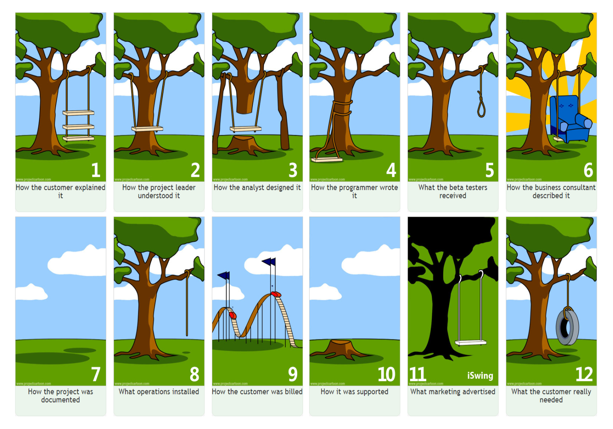
2.4.2 软件的复杂性
对于没有现代软件开发经验的人来说，当前软件程序的复杂性是难以应付的。窗口界面，客户端-服务器架构、分布式应用、数据通信、庞大的关系式数据库和庞大的应用程序规模都促成了软件/系统复杂性的指数增长。
如果没有经过良好的设计，面向对象技术可能会使项目变得复杂而不是更简单。
2.4.3 程序员犯错
就像任何人一样，程序员也是会犯错的。并不是所有的程序员都是领域专家。没有经验的程序员在编码时可能会引入一些非常简单的错误。
缺乏编码实践，单元测试能力和调试能力是程序员在开发阶段引入缺陷的普遍原因。
2.4.4 需求的变更
客户可能不能理解变更或以任意方式要求重新设计、重新安排对项目带来的影响。如果有许多小变更或大的变更，项目各部分之间已知或未知的依赖关系可能会相互影响并导致问题，对变更的追踪的复杂性可能会导致错误。从而对工程人员的积极性造成影响
在一些快速变化的业务环境中，不断变更的需求可能已成为现实。在这种情况下，管理层必须了解由此带来的风险，QA（质量工程师）和 测试工程师必须始应和吉欢持续的广泛测试，以防止 bug 失控。
杀死一个程序员不需要用枪，改三次需求就可以.jpg
2.4.5 时间压力
对软件项目的进度安排是及其困难的，通常需要大量的猜测。当最后期限迫在眉睫时，错误就会发生。如果没有足够的时间用来设计、编码和测试，那么引入 bug 是一件很容易的事。
2.4.6 不完善的代码文档
维护写的不好的或文档很差的代码是很困难的，这将会导致 bug 的出现。在许多组织中，管理层不鼓励程序员写代码文档或编写清晰易懂的代码。不过事实通常是反过来的：程序员通过快速编写代码来获取分数，如果没人能读懂的话就会有工作保障。
由于项目的复杂性和不完善的文档，任何开始在此类代码上工作的程序员都会感到困惑。很多时候对有垃圾文档代码进行小的修改都需要很长的时间，因为它们的学习曲线很长很陡。
2.4.7 软件开发工具带来的问题
可视化工具，类库，编译器，脚本工具等等，通常都会引入它们自己的 bug 或是不完善的文档。使用它们会带来附加的 bug。对软件工具的不断变更会带来持续的版本兼容性问题。
2.4.8 缺少有经验的测试人员
有专业领域知识的熟练测试人员对于项目的成功是极端重要的。但并非所有公司都能找到有经验的测试人员。领域知识加上测试者寻找缺陷的能力能够产出高质量的软件。缺少其中任意一项都会导致 buggy 的软件。
3 调试的流程、思路和方法
（这一小节的标题是“流程，思路与方法”，我打算以流程为主干，中间穿插各个流程步骤中需要用到的思路和方法，如果还有剩下的东西，那就在流程之外作为补充。）
不知道你听没听过过那个“把大象放到冰箱”的段子，把大象放到冰箱里面只需要 3 步，即：打开冰箱，放入大象，然后关闭冰箱。这个描述是没有问题的（what to do），只是太笼统了一点，毕竟我们可能不知道到哪里去找到能放入大象的冰箱（how to implement）。我们先简单描述一下调试的过程（what），再逐步细化（how），下面是我找到的一些文章里面的说法：
- 【11】中是这样描述的：第一步，重现发现的 bug。第二部，对 bug 进行描述，尝试从用户那里得到足够多的输入以获得确切的原因。第三步，捕获 bug 出现时的程序快照（snapshot），尝试获取此时程序的状态和所有的变量值。第四步，根据状态和变量值对快照进行分析，基于此找到 bug 出现的原因。第五步，修复存在的 bug，并保证修复没有引入新的 bug。
- 【12】中则将调试过程分为简单的三步，即：观测错误，定位错误和修复错误。
- 【13】中则是：识别错误，确认错误位置，分析错误，证明分析正确性，覆盖横向缺陷（Cover Lateral Damage），修复并验证
我参考的多数资料中列出的调试步骤和【13】中的差不多，下面我们以它为基础来分步骤介绍调试：
- Identify the error（识别错误）
- Find the error Location（定位错误）
- Analyze the error（分析错误）
- Prove the Analysis（证明分析）
- Cover lateral Damage（擦屁股）
- Fix & Validate（修正和验证）
对于以上 6 步的具体描述，我在很大程度上参考了【14】中的内容。
3.1 调试之前的准备
在寻找调试与测试的相关资料时，我浏览了不少的“调试 vs 测试”的文章，原先我准备在本文中加上调试与测试的对比关系，但是在实际操作过程中发现和测试相关的知识非常的多，遂放弃。下面是我找到的关于调试的一些特点：
- 调试一般在发现程序不能正常进行时进行，并以解决问题和成功测试软件结束。
- 调试一般都是通过人力一步一步地找出和删除特定的 bug，自动化调试是不可能实现的，而且这个过程没有固定的思路，使用的方法也不一定可靠。
- 对程序的调试需要理解程序，它需要在源代码层次对 bug 进行定位和清除。如果没有理解程序的设计思路和使用的算法的话，调试过程将会变得相当困难，因此调试由开发团队内的开发者或程序员来进行。
鉴于此，在开始调试之前，我们应该准备好相应的调试工具，并且我们至少应该对需要调试的代码有一定的了解，参考资料【12】中给出的建议是：
- 阅读一下文档
- 阅读一下每个函数的函数头
- 浏览一遍源代码，并问自己几个问题：
- 这个类/方法是干什么的
- 函数的参数类型和返回值是什么
- 我能够对每一行代码都解释清楚吗
- 运行一下，看看会发生什么
3.2 Identify the error（识别错误）
识别错误这一步骤旨在获取和 bug 相关的信息，对造成 bug 的错误的类型和性质做出一个大致的判断。做个类比的话，和中医讲究的“望闻问切”很像。如果对中医那一套不感兴趣的话，更加现代一点的说法就是医院里面的分诊台。分诊是指对来院急诊 就诊病人 进行 快速、重点 地收集资料，并将资料进行 分析、判断、分类、分科 ，同时按照轻重缓急来安排就诊顺序。
上个学期某天晚上我感觉略有胸闷，就去了最近的医院，分诊台听了我的症状描述后引导我去了内科急诊， 来进行进一步的治疗 。（所幸屁事没有，原因可能是体测时测肺活量用力过度）
错误识别是在发现 bug 后应该首先进行的步骤。如果这一步做的不好的话会浪费许多的开发时间（如果我胸痛却被分到了妇科急诊，那我完蛋的可能性岂不大增）。通常来说，由用户报告的生产错误是很难弄清楚的，有时候从他们那里获得的信息带有误导性（就好比病人告诉医生的可能并不是主要症状，头痛非得说是脚气，或者是因为一些难以启齿的事情而可能会隐瞒一些病情）
正好我用了医疗上的例子来类比错误识别，这里不妨来点中医豆知识：关于“望闻问切”的解释
- “望”指观色气，观察病人的发育情况、面色、舌苔、表情等；
- “闻”指听声息，听病人的说话声音；
- “问”指询问症状，询问病人自己感受的症状，以及患病史；
- “切”指摸脉象，用手诊脉或按压腹部检查有无痞块。
【15】中关于望闻问切给出了常见症状和对应内因，比如面色发白主虚主寒主失血，面色发送主热，面色发黑主肾虚等等。至于这些经验判据是否有效我这里不置可否，毕竟这都是几千年来的中医通过非科学方法得出的结论。（注意，非科学与伪科学是完全不同的概念，关于中医的科学化，有兴趣的可以看看【16】）
古人云：“望而知之谓之神，闻而知之谓之圣，问而知之谓之工，切而知之谓之巧”。据说，厉害的老中医可以根据望闻问切直接看出病人的病症，并对症下药，药到病除。同样这里我还是不置可否，我把这段话拿过来只是为了类比一下调试。但是，厉害的程序员可以根据程序的表现看出程序的问题，这句话我是认同的。就算不怎么厉害，随着经验的积累也会对一些常见的 bug 产生直觉。例如：当一个 C 语言编写的简单程序崩溃了，对 C 语言略有经验的人至少可以想出以下几种可能出现的错误：（1） 空指针解引用（2）悬挂指针解引用（3）堆栈溢出（4）内存分配失败，等等。进行进一步的调查可以缩小范围（比如查看 core 文件），从而找到真正的问题。
识别错误首先需要对 bug 进行观察。如果是身为开发者的你发现的 bug 的话，那么发现即查看；如果是用户报告的 bug，那可能需要用户发给你几张屏幕截图或者通过远程连接来进行查看。其次要能够复现 bug，如果无法复现的话那你就不应该认为 bug 被修复了。
在发现了软件的错误后，你还需要知道软件在该错误存在下的预计行为。对于复杂的软件，判断某个错误导致的预期行为是很困难的，但是这些知识是解决问题的基础。要做到这一点我们需要与产品所有者交流，检查文档以获取信息。
最后，还需要对这个识别进行验证。与应用负责人确认这个错误确实存在的，并且在错误下的预期行为和实际情况是一致的。经过验证你可以会发现修复这个错误是不必要或者不值得的（错误下的某些行为带来的影响很小）。
3.3 Find the error location（找到错误位置，或者叫错误定位）
一旦我们识别出了是什么错误，那就是时候在代码中找出错误的准确位置了。这个时候我们并不在乎对整个错误的理解，我们只关注找到它发生的位置。
举个最简单的例子，假如你的程序功能是显示一张图片，然而图片却没有正常显示，那么造成这个 bug 的直接错误就很可能是在调用显示函数时出现了问题。至于是图片未能正确读入内存还是显示函数参数错误我们并不关心（实际上也分析不出来），我们找到错误的“案发现场”即可，即调用函数的代码位置。
最直接的方法就是打开调试器一路单步执行下去。这方法听起来有点楞，但是在代码规模不大，代码依赖关系不复杂的情况下是非常有效的，当调试器嘀嘀叫的时候就说明你找到了问题。如果存在多个错误的话，可能还需要费点力气分辨出出直接导致问题的那一个，多个错误指向同一 bug 也不是不可能的事情。
写到这里，我想了想自己的调试经历，好像用的最多的的还是 print 调试法（菜）。确定好错误后，在可能出现错误的地方临时加上一些 print 函数，观察一下打印的值是否是有问题的。
有人觉得 print 方法挺低级的，但这确实是一种简单而有效的方法，几乎所有的编程语言的标准库中都会提供控制台输入输出功能，因此它非常通用。但是它的缺点也很明显，标准输出可能会因为多线程抢占出现输出无序的问题，如果是内存中的问题的话，print 基本用不上。而且标准输出的终端并不一定有，比如服务器环境。
比 print 调试和单步调试更好的是打 log（logging），也就是通过日志文件来判断错误的发生位置。在参考资料【18】中作者这样说到：
> 单步调试最重要的作用不是让你看清程序逻辑，它最大的好处是可以在断点的地方查看所有的内部状态，从而在很复杂的逻辑中找到引发问题的条件语句。如果在某个单元测试上 fail 了，显然单步跟踪进去是发现问题的最简单的方法。
单步调试的问题在于限制条件太多了：
- 很多 bug 是跟运行数据相关的，这些 bug 很可能只能在部署了软件的那一个环境里能复现，别的环境里运行数据不同就复现不了，你能在生产环境里打开调试日志，但你能在生产环境里挂调试器吗
- 很多问题无法单步调试，或者单步调试的时候不复现，最典型的就是网络相关的应用，你进到单步里面，远端服务就超时了，逻辑都不一样了。还有并发性的问题，只有两个过程同时执行的时候才会思索，你单步进去，根本遇不到死锁的问题。
- 根本不知道应该在哪里设断点，通常也是多线程当中的情况，一个线程被一个信号量阻塞了，根本不知道这个时候用这个信号量的是哪个线程，怎么设断点。。。。。。
而相比起来日志在这种时候就有很多优势了：
- 不受环境限制，最多就是重新部署一个带调试日志的版本
- 基本不会影响运行逻辑，真是运行情况是怎样，打出的就是怎样的日志
- 可以在所有怀疑的地方同时打上日志，逐个排除
要说的话，print 调试也算是打 log 的一种，但它只能算是最基础的打 log。日志能够提供更加格式化的消息，良好的日志格式和日志类型分类有助于更快地找到错误点。关于如何打 log 已经有了很多很好的教程和很多好用的库，这里就不展开了。
3.4 Analyze the error（分析错误）
这是调试过程中的关键一步，使用自底向上的方法从发现错误的地方开始分析，这样你就能够看到错误发生的深层原因了。除了找出错误发生原因外，错误分析的另一个重要任务是错误发生点周围没有其他的错误（冰山理论），以及确定在修复过程中引入其他缺陷的风险是什么。
这一步和上一步并不是分开的，调试器和日志都是有用的。
3.5 Prove your analysis（证明分析）
在对原始错误进行分析后，你应该根据你的分析来编写一些自动化测试，测试该错误可能导致的其他问题。如果你的测试都失败了，那就证明你的分析是正确的。（这就是所谓的演绎法）
3.6 Cover lateral damage（覆盖横向损伤）
在这一阶段，你几乎已经准备好开始修复错误了，但是你还必须在修改代码之前擦干净你的屁股。你需要创建或集合代码的所有单元测试，这些单元测试围绕你将要修改的位置进行，这样你可以确保在修改完成后不会对代码的其他部分造成破坏。这些单元测试应该全数通过。
打个比方的话就是医生做完手术之后应该检查一下，不会因为不小心把钳子或纱布留到患者的身体里。（我听说过这样的新闻）
3.7 Fix & Validate（修复和验证）
现在可以修复这个错误了，修复后再运行所有的测试脚本检查是否全都通过。
3.8 关于单步调试和日志调试的讨论
在上面我引用了知乎用户“灵剑”的一篇回答。在回答所述的问题上还有其他讲的不错的回答，和该问题同类型的问题也是存在的【19】，可以前去浏览。
上面我只引用了使用日志文件的优点，现在把另外一半补上【18】：
实际上调试日志用得越多也就越会觉得调试日志也有很明显的局限性：
- 打印得太多！看不过来！
- 有的时候不清楚究竟什么原因导致了问题出现，也不知道该打什么日志有些时候需要监控的对象不能有效地打印出来，比如说需要观察一个对象的属性的变化，然而这个对象的属性太多了，可能还有内部级联的对象，全部打印出来需要写很多代码。还有些对象表现为一个数据结构，比如说链表，比如说树、图，很难有效地打印出来。
- 有时候bug自然触发的概率很低，需要用一些人为的手段来帮助触发（比如故意在某个原本比较快的过程中增加sleep，模拟压力大时延迟增加的现象），需要增加一些额外的代码。
调试日志也不是终极的解决方案，它还差得远，当你需要解决更加复杂的问题的时候，你会开始发明一些新的调试方式，比如说使用监控系统提交监控数据，比如说交互式的Admin Console。
在实践中，程序的调试方法并不局限，一个有经验的程序员会选择当前条件下最为善巧方便的方法。【19】（作者：Aman）
4 什么是调试器（debugger）
在充分地介绍了 bug 和 debugging 后，我们终于可以来看一看 debugger 了。这一节的目的是简单介绍调试器的功能和工作原理。本来我想着展示一些实际调试例子，但是调试本身就是一个非常跳跃的过程，其中的思路通常都是非线性的，gif 录制时间过长的话加载起来还是挺费事的，我会在下面给出一些一些调试示例的资料。（调试的展示我会在本文的 emacs 部分进行，但也仅仅是使用相当简单的代码展示基础功能而已。）
在写下这一句话的时候，我用过的调试器只有 VS 中的调试器和 gdb（gnu debugger）（我甚至只使用过断点功能），而且大多数时间我都是 print 走天下。调试器使用经验的缺乏必然会导致下文中某些低级错误的出现，请在我没有注明引用来源的地方谨慎阅读，因为其中会不可避免地带有我的个人偏见，它们不一定是正确的。
先给出根据维基百科【21】的说法，调试器的定义如下：
A debugger or debugging tool is a computer program used to test and debug other program(the "target" program). The main use of debugger is to run the target program under controlled conditions that permit the programmer to track its operation in progress and monitor changes in computer resource (most often memory areas used by the target program or the computer's operating system) that may indicate malfunctioning code. Typical debugging facilities include the ability to run or halt the target program at specific points, display the contents of memory, CPU registers or storage devices (such as disk drives), and modify memory or register contents in order to enter selected test data that might be a cause of faulty program execution.
翻译即：调试器或调试工具是一种计算机程序，它被用来测试或调试其他的程序。调试器的主要用途是在受控条件下运行目标程序，以此允许程序员跟踪正在进行的操作，和监视可能导致故障的计算机资源（最常见的是被目标程序或计算机系统使用的内存区域）。一般的调试功能包括能够在指定的位置运行或停止目标程序、显示内存内容，CPU 寄存器或存储设备，以及修改内存或寄存器内容来输入可能导致程序执行错误的数据。
一般来说，调试器会在 top level 提供一个查询处理器（query processor）、符号解析器（symbol resolver）、表达式解释器（expression interpreter）和调试支持界面（debug support interface）。调试器也提供了一些更加复杂的功能，比如单步运行程序，在某个地方停止（断点功能），和跟踪某个变量值的功能。一些调试器还有在程序运行时修改程序状态的能力，还可以在程序的不同位置继续执行，以绕过崩溃（crash）或逻辑错误。
4.1 调试器应该具有的功能
关于调试器的详细功能，我貌似找不到一个比较权威的说法，这里就主要参考了 gdb 【23】 和 VS 中调试器【22】提供的功能。由于 GUI 演示起来方便直观，这里就使用 VS 上的调试器来录制 gif。
4.1.1 单步执行（single-stepping）
顾名思义，单步执行就是一下只执行一步。在调试过程中一步一步跟踪程序执行的流程，根据变量的值来找出错误的原因。
在 VS 的 C++ 调试中，按下 F11 就进入调试模式，此时程序会停在 main 函数开头等待下一步指示。继续按下 F11 的话，每按一次，程序就会执行一次语句，然后在语句结束的地方停住（或者说是下一条语句的开始处），就像这样：
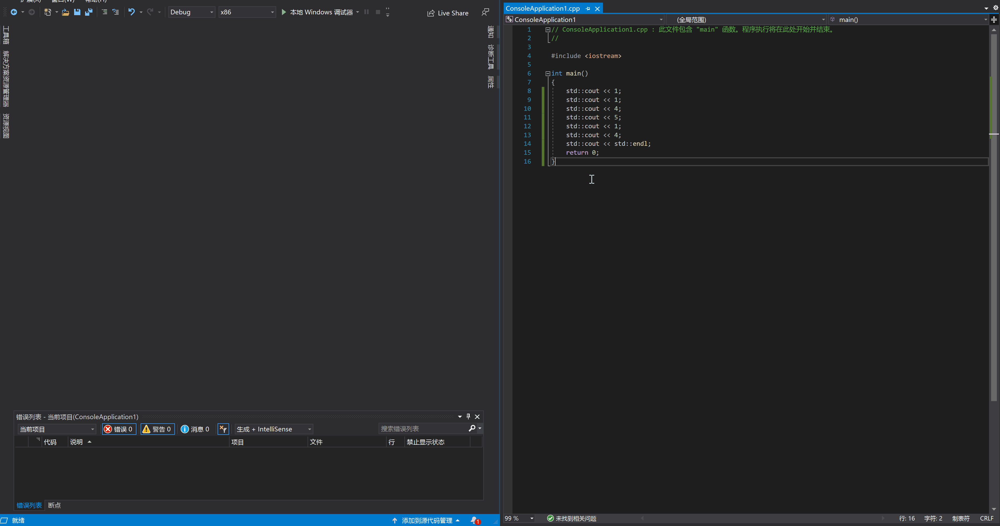
如果语句中含有函数调用的话，单步执行会跳到最深处的函数的开头，然后在你的指令下顺序执行该函数。如果你不想一步一步调试内层函数的话，可以使用跳出指令来一次性完成该函数的调用，它的快捷键是 SHIFT + F11。如果不关心内部函数调用的话还可以使用逐过程指令 F10，它将每个语句视为一个整体，不会因为语句中的函数调用而跳转到被调函数的开头，而是完整执行完当前语句后等待后续指令。
一般来说是不会这样从头到尾单步调试的，单步调试需要配合断点使用。
4.1.2 断点（breakpoint）
这大概是我在写这篇文章前唯一使用过的调试器功能（是的，我之前没用过单步执行的功能，我一般先靠 print 猜出错误发生点，然后在这个点打上断点…….）。
断点的意思就是在程序中插入一个中断点，当程序执行到这个地方的时候就暂停，等待下一步的指令。通过打断程序的执行，程序员可以通过检查程序当前状态来判断程序是否存在错误。
在 VS 中打断点的方法是：在代码行的左边单击左键。点击后你可以看见一个红点，再次点击可以将它去掉，就像这样：
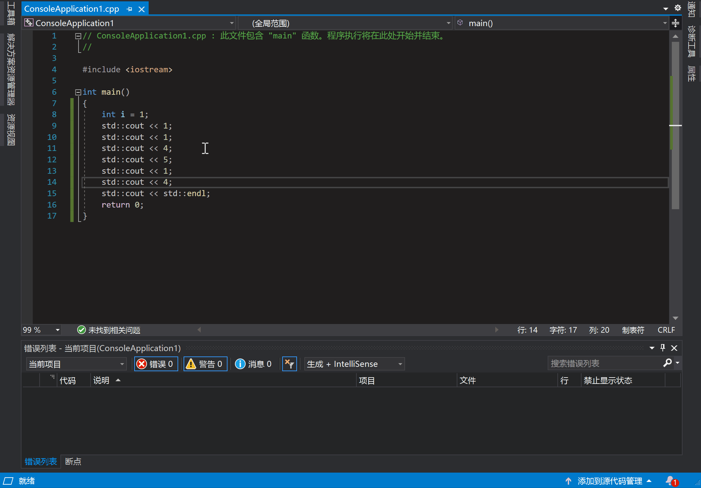
按下 F5 开始执行的话，代码就会在断点处暂停，并等待其他指令继续执行。到达断点后就可以使用工具观察当前状态了。此外还可以通过设置各种条件来控制断点的行为，比如断点命中次数，条件变量等等。在断点触发时，还可以定义一些操作，比如输出一些调试信息。
4.1.3 检查数据（Inspect data）
调试器应该提供监视当前数据的能力，这些数据可以是：
- 局部变量和全局变量
- 寄存器和内存
- 调用堆栈
- 线程
VS 调试器关于这方面的使用说明汇总在这个页面，可以前往参考。由于内容过多这里就不进一步展开了。
上面的三个功能应该是调试器最显著的功能。
4.2 调试器的原理
由于能力不够且已经有人写出了很好的文章，这里我先贴上一些网址：
How debuggers work: Part 1 - Basics
How debuggers work: Part 2 - Breakpoints
How debuggers work: Part 3 - Debugging information
下面是上面后三篇的中文翻译：
英文原文作者是：Eli Bendersky，他的网站是： http://godorz.info
中文译者是 ripmu，他的网站是： https://eli.thegreenplace.net
这里还有另一位翻译了上述文章的博主： https://hanfeng.ink ，不过时间已经是 2019 年了。
原作者的博客从 2003 年到现在居然没断过，属实有毅力。跟着这些文章过一遍是很有好处的，但是并不是每一个人都有装了 Linux 的机器，而且这些文章对汇编知识有一定的要求。下面这一片文章是我能看懂的类型：
（上面这些文章我只留了个网址，之后的有效性还真不好说。如果你觉得某些文章值得收藏可以去原网址保存一份，网址失效了可以搜索文章标题。不过好的东西总是存在的，所以也不用太担心找不到相关的优质资源，i just let it go ~ 2021-07-03）
5 Emacs 中的调试
写了这么多，总算是介绍完了 bug，debugging 和 debugger 三大内容。接下来就是 Emacs 相关了，我会介绍一些 Emacs 提供的调试机制。
5.1 对变量和函数的追踪
对变量的追踪主要和 add-variable-watcher ， remove-variable-watcher=， =get-variable-watchers 三个函数有关。
add-variable-watcher 函数接受一个符号和函数，它的功能是在符号值即将发生改变前调用参数函数。符号参数就是要监视的变量名，参数函数需要接受 4 个参数： symbol, newval, operation, where 。其中 symbol 是将要发生改变的变量符号，newval 是变量即将变成的值（在这个时候，变量中保存的值还是之前的值）， operation 是一个表示变量改变方式的符号，它的值可以是 set, let, unlet, makunbound, defvaralias ， where 是 buffer-local 值被修改的 buffer，如果变量不是 buffer-local 的，那么这个参数为 nil。
remove-variable-watcher 接受符号和函数，它的作用是移除符号的 watch 函数。 get-variable-watchers 函数接受符号，并返回符号上挂载的 watch 函数表。
下面的代码演示了 variable-watcher 的用法：（首先需要创建一个叫做 yy 的 buffer）
(defun easy-watcher (syn nv op where) "just display it" (with-current-buffer "yy" (goto-char (point-max)) (insert (format "val: %s, newval: %s, operation %s, where %s\n" syn nv op where))))
然后执行以下命令：
(add-variable-watcher 'abc 'easy-watcher) (setq lexical-binding nil) (let ((abc 1)) 1) (setq abc 2) (makunbound 'abc)
这样就可以在 yy buffer 中看到以下消息：
val: abc, newval: 1, operation let, where nil val: abc, newval: nil, operation unlet, where nil val: abc, newval: 2, operation set, where nil val: abc, newval: nil, operation makunbound, where nil
对于函数的追踪和变量很相似，它是通过 trace-function ， trace-function-background ， untrace-function 和 untrace-all 四个函数来进行的。
trace-function 是 trace-function-foreground 的别名，它接受一个固定参数和两个可选参数。固定参数就是需要追踪的函数，两个可选参数是 BUFFER, CONTEXT ，BUFFER 就是写入追踪信息的 buffer，CONTEXT 要求是一个无参函数，调用它时返回的值会被插入 BUFFER 中。一般来说，后面两个参数是不用管的。
在开始追踪后，每当调用函数时就会在 BUFEER 中插入 Lisp 风格的追踪消息，消息中包含函数的参数和返回值。如果 CONTEXT 返回值不为 nil 的话也会被插入 BUFFER 中。每当函数被调用时， BUFFER 都会弹出。与 trace-function-foreground 不同的是， trace-function-background 在函数调用时不会将 BUFFER 弹出。
untrace-function 会取消对函数的追踪， untrace-function 会取消对所有函数的追踪。
下面是一个简单的例子：
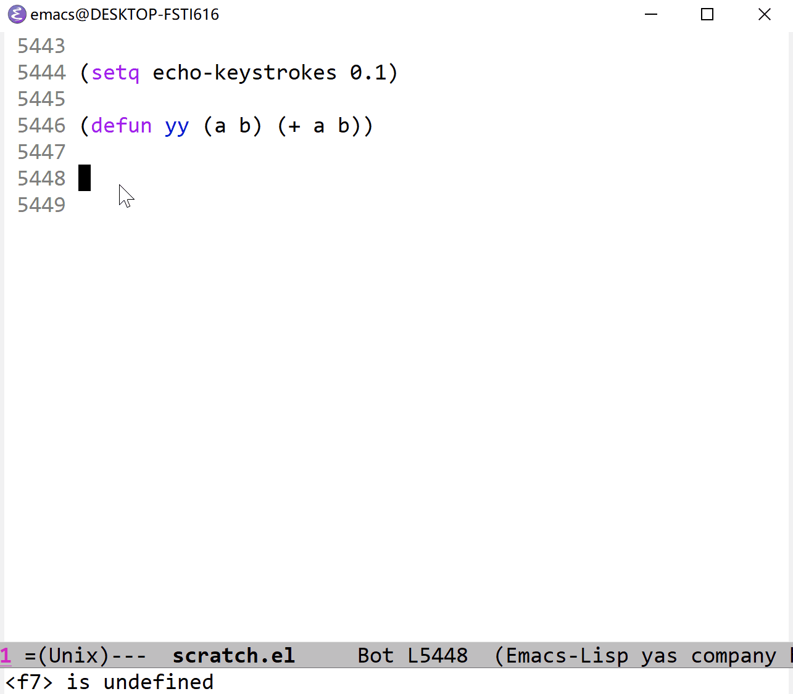
如果使用一些被频繁调用的函数的话，效果可能会非常惊人：（这个时候就应该用 trace-function-background ）
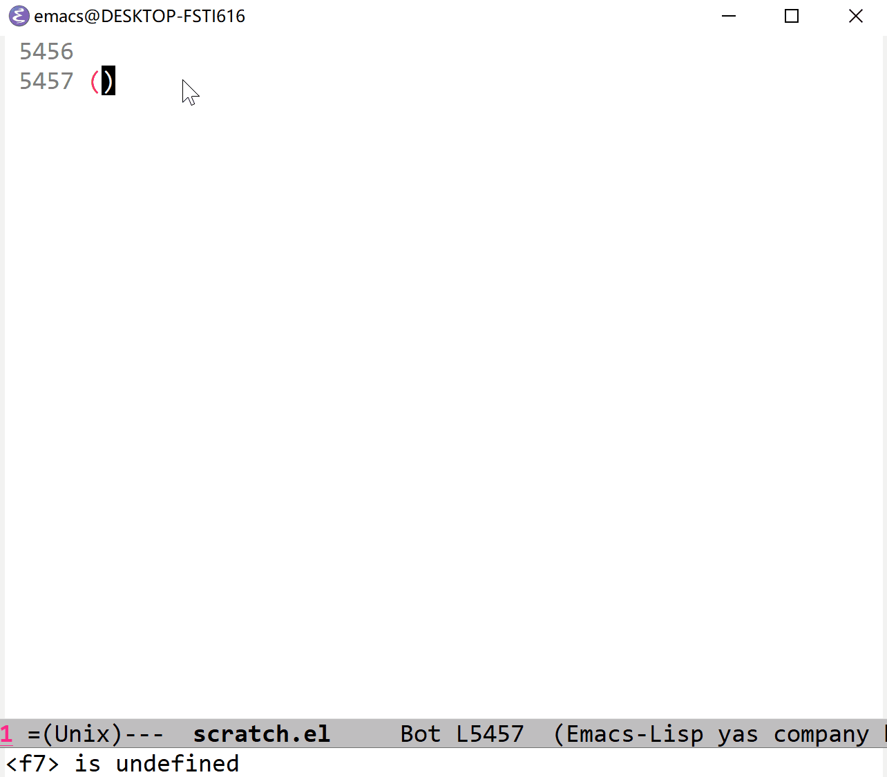
5.2 Elisp 的内置调试器
Lisp 调试器提供了暂停（suspend）求值的能力，当求值被暂停时（一般被称为中断），你可以检查运行时堆栈，检查局部和全局变量，或者对它们进行修改。
这个调试器的显示效果和 Python 出现了未处理的异常很像，就像这样：
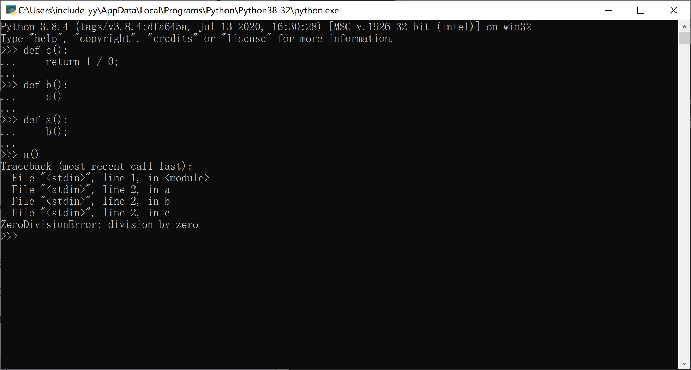
从上图可以看到，从调用函数 a 开始，Traceback 一直回溯到了出问题的函数 c 。
用 elisp 来做一遍的话，效果是这样的：
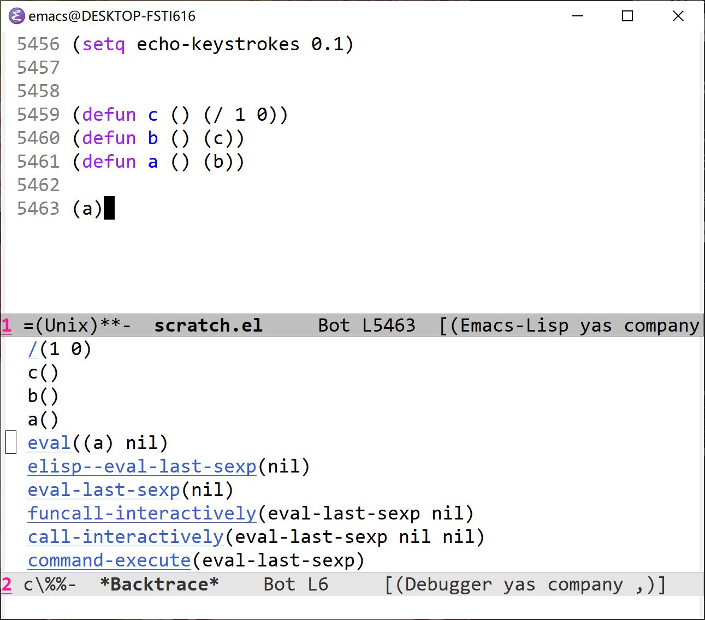
可以看到，它和上面 python traceback 显示的内容相似，只是顺序反过来了，c 出现在了最上面。从我按下 C-x C-e 调用 eval-last-sexp 到出现除零错误，调用栈在 *Backtrace* buffer 中显示的顺序是从下到上的，逐步到达最里层的函数调用。
当出现错误时，调试器就会弹出，不过也可以通过设置一些开关变量来控制，比如 debug-on-error ，如果它的值被置为 nil 的话，当我调用上面的函数 a 时就不会出现 backtrace ，而是在底部栏显示： Arithmetic error。不过想要设置该变量为 nil 的话还需要注意 eval-expression-debug-on-error 的值，如果它为 t 的话，在你设置通过 eval-last-sexp 将 debug-on-error 设为 nil 后， debug-on-error 的值依然为 t。其他的一些选项可以参考这里。
除了等待错误找上门来，我们也可以主动点，在函数调用发生时就调用调试器。
这里涉及到两个函数： debug-on-entry 和 cancel-debug-on-entry ，两者都接受一个函数名字来作为参数。使用 debug-on-entry 标记过的函数被调用时就会触发调试器。与之相似的，可以使用 debug-on-variable-change 和 cancel-debug-on-variable-change 来使标记过的变量在被修改时调用调试器。
这个功能我感觉用来演示调用栈的变化是十分生动形象的：
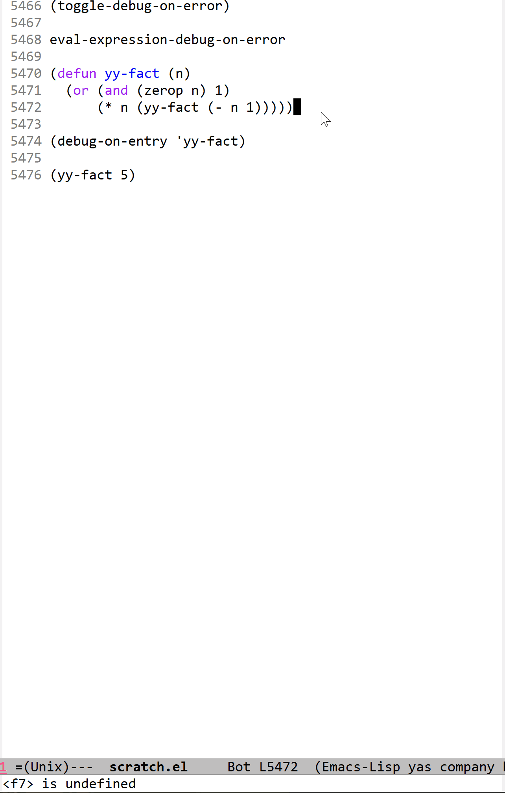
在上面的调试过程中，由于它是一个递归过程，所以每当开始下一层递归时，函数调用自身使调用栈增长，直观的表现就是 *Backtrace* buffer 的拉长，如果改成迭代的话就没有这个效果了。我在这个过程中一直在摁 c 键，它是一个调试快捷键，表示“继续执行”的意思，每当遇到 yy-fact 函数调用时调试器就会使程序停下来，从而就有了上面的效果。
除了显式标记函数入口的方法可以主动调用调试器外，我们还可以直接调用调试器。这可以通过在想要调试的地方加上 (debug) 函数调用。就像这样：
(defun a () (if (debug) 1 2)
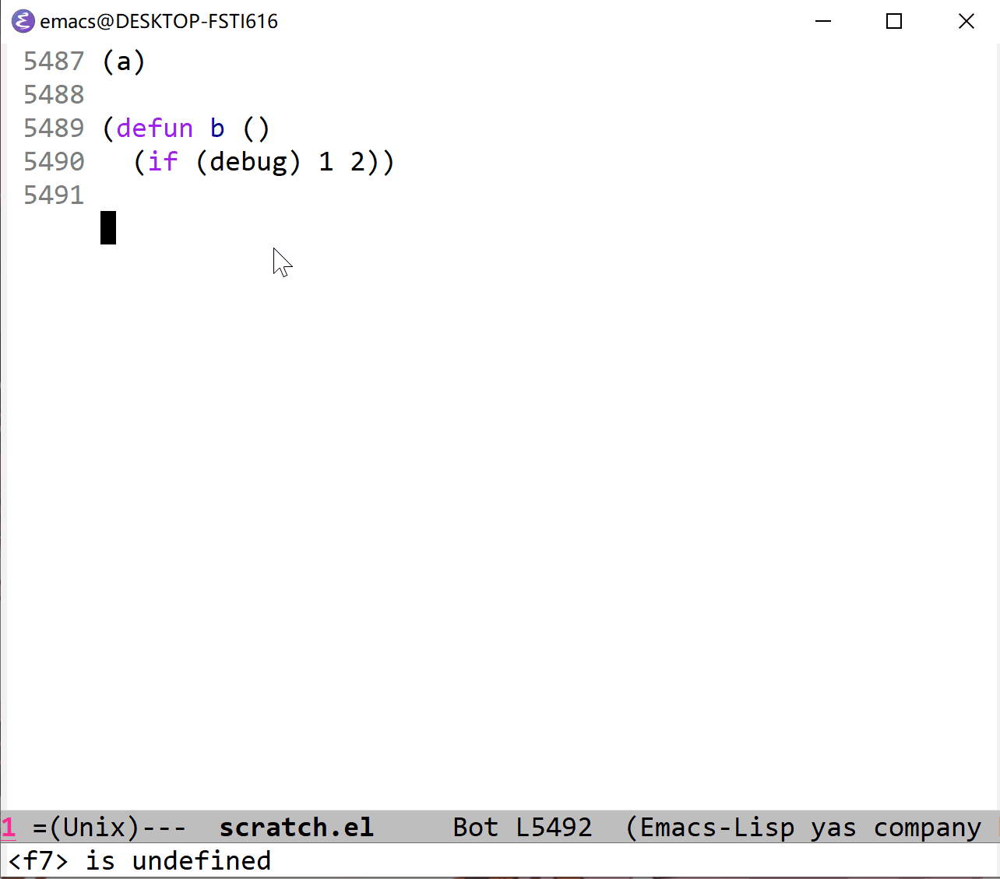
从上面的 gif 中可以看到，第一次 echo area 显示了 t1，第二次显示 nil2，根据 if 分支的不同值，可以发现 (debug) 表达式的值影响了分支走向。在上面我使用快捷键 r 来指定 (debug) 的返回值，从而控制了函数行为。如果没有使用 r 的话， (debug) 默认会返回 nil。
不过上面这种玩笑式的用法是官方文档所不推荐的，因为这样用改变了原有代码的逻辑， (debug) 的返回值最好是被忽略掉，不对原有代码造成影响比较好。文档建议在像是 progn 顺序执行的地方使用 debug ，这样可以避免返回值造成影响。
除了我上面提到的 c 和 r ，还有许多其他的按键命令，它们可以通过在 *Backtrace* buffer 中按下 h 或 ? 来显示，或者参考这里和这里。我毕竟不是来抄文档的，关于快捷键我就说这么一点。
在我使用这个 debugger 的时间里，我几乎就没有主动调用过它，不看文档的话我还以为这就单纯是个调用栈回溯器。它里面还有很多有意思的东西，不过我的介绍就到此打住了。
5.3 edebug
edebug 是一个源代码级别的调试器，关于它的功能，文档上是这样说的：
- 提供单步调试和能力
- 可以设置有条件或无条件断点
- 可以在某一全局条件满足时停止
- 快速/慢速的跟踪
- 显示变量和表达式的值
- 出错时停住
- 显示 backtrace
- 等等……
Elisp 内置的调试器主要是起辅助作用，相比之下 edebug 就是个非常完整的调试器了。鉴于我是在学习而不是了解这个玩意儿（说不好真的用得上），下面我会尽可能按照比较自然的顺序覆盖文档中的大部分内容。
5.3.1 一些基础知识
首先是如何让代码能够变得被 edebug 调试，这就需要对代码进行调校（instrument）。在调校之后，函数中会插入一些额外的代码（这不会修改源代码），以便于在合适的地方触发 edebug。
通过快捷键 C-M-x 可以对定义求值，带上前缀的话就可以在定义函数之前完成对函数的调校，即 C-u C-M-x 。这个快捷键按起来还是有点麻烦的，不过这也正好与通常的求值区分开来。如果当前主要目的是调试，那可以将 C-M-x 作为调校的快捷键，这可以通过修改 edebug-all-defs 选项来达到目的，当它的值为非空时， C-M-x 就会进行调校，其他的一些函数比如 eval-region ， eval-current-buffer 和 eval-buffer 也会进行调校。除了通过 setq 来设置变量外，emacs 也提供了 edebug-all-defs 命令来翻转这个选项的值。
上面提到的都是对函数的调校功能，如果把选项 edebug-all-forms 设置为非空的话，任意的代码都可以被调校，即使是非函数的代码。这个选项可以通过 edebug-all-forms 来翻转值。使用 edebug-eval-top-level-form 会调校所有的 top-level 形式，它的行为不受 edebug-all-defs 和 edebug-all-forms 的影响。
如果想要在调试过程中对某个还没有被调校的函数进行调校的话，可以使用 I （edebg-instrument-callee）来对某个被调函数进行调校。不过要做到这一点需要这个函数对 edebug 是可见的，edebug 需要知道这个函数的位置。因为这个原因。在载入 edebug 后，调用 eval-regin 会记录每个经它求值的函数的位置，即便没有进行调校。
要想取消对某个函数的调校的话，可以对函数进行重新求值。除此之外也可以调用 edebug-remove-instrumentation 命令。
其次就是一些调试过程中的注意事项了。当调用某个被调校过的函数时就会激活 edebug，并进入调试模式，在进入调试后，源代码的 buffer 会暂时变为只读的。edebug 的在进入调试后暂停并等待下一步的指令（默认模式下）。
在调试模式中，光标所在的位置就是当前的执行位置（在你没有自己易懂光标的情况下）。除了光标外，在执行的当前行的最左边还会有一个标识（小箭头），表示当前的执行位置在源代码中的行位置。
在 edebug 中，凡是能够停止的点被称为 stop point （下面使用”停止点“这个词来表示）。对于表来说，表的表头和表尾都是停止点，就像对于 (+ 1 2) 它的停止点就是下面表达式打点的地方 .(+ 1 2). 。对于变量来说，停止点只有一个，那就是变量的后面，比如对于变量 n ，它的停止点就是 n. 。
以一个简单的 fac 函数为例，它所有的停止点为：
(defun fac (n) .(if .(< 0 n.). .(* n. .(fac .(1- n.).).). 1).))
面对平行关系的表达式，比如 (progn (print 1) (print 2)) 中的两条打印表达式，执行过程应该是从第一表达式的首停止点执行到尾执行点，然后再到达第二表达式的首停止点，再执行第二表达式到达尾停止点，如此继续下去。对于嵌套关系的表达式，比如 (+ a (+ b c)) ，执行是从外部表达式的首停止点，到内部表达式的首停止点，再到内部表达式尾停止点，再到外部表达式尾停止点。多重嵌套也是这个规则，即由外到内再到外。（记住变量只有尾停止点）
下面我以 fac 函数为例来展示一下单步执行的过程。它与上面的 fac 定义一致，可以对照观察（这里使用的是 t 命令，它以一定的时间间隔来单步执行，仔细看的话可以在图片的最左边看到黑色的小三角，这就是当前执行行标识，看不见也没关系）：
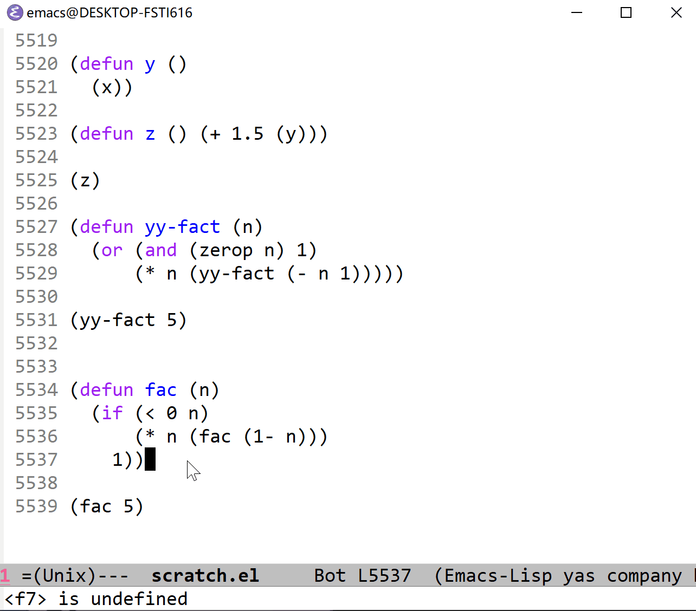
上面的 gif 时间太长了，看个十几秒你就应该清楚所谓的停止点的意思了，下面我把 t 命令的时间间隔调短一点，方便观察全部过程（这里也可以使用 T 命令，不过又太快了点）：
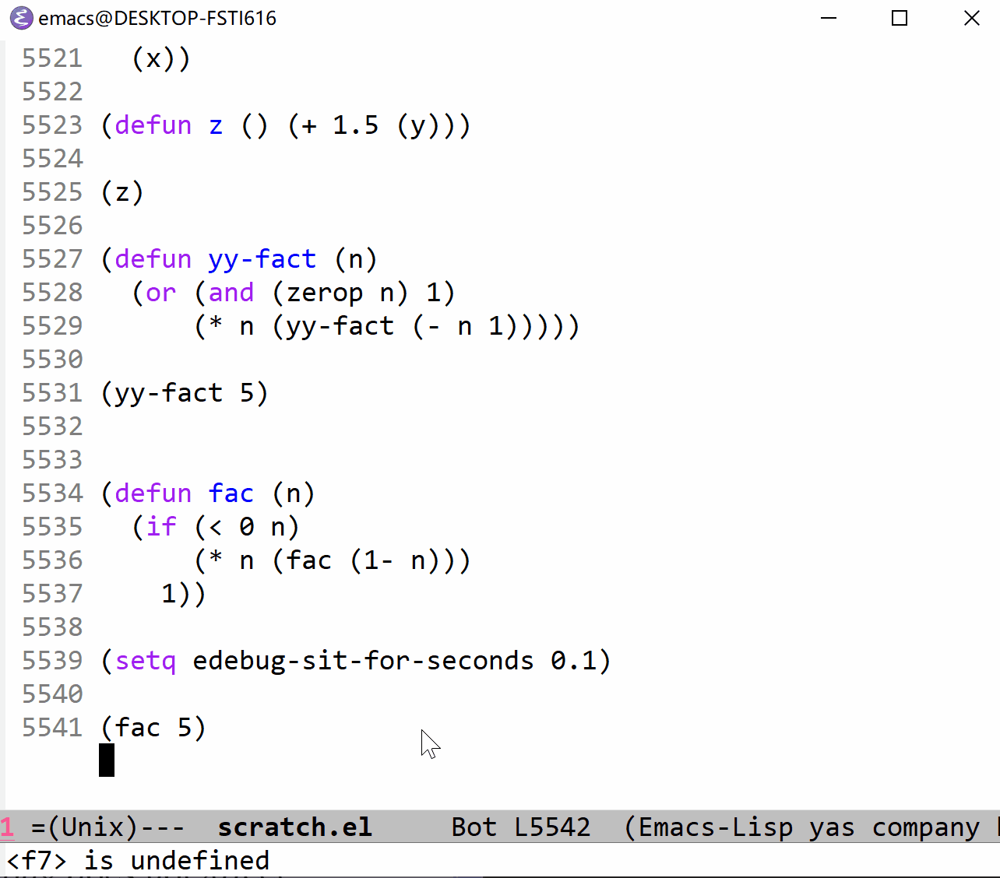
算了，还是放上使用 T 命令的 gif 吧（下面的代码说明它的间隔时间和 edebug-sit-for-seconds 没什么关系）：
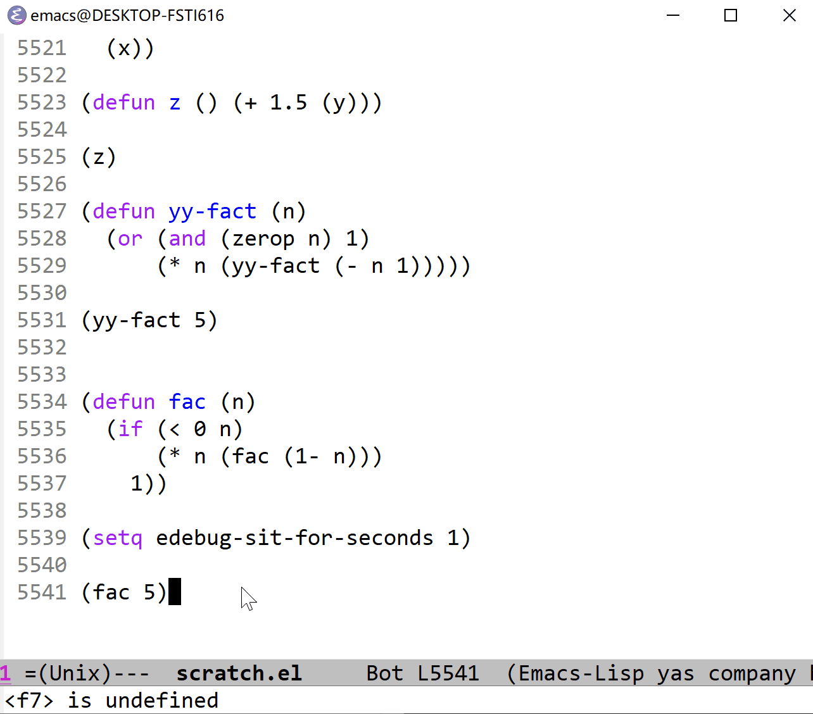
在命令式的语言中（比如 C），代码一般是以语句为单位的，一般来说一行就是一个语句，这样加断点的话以行为标识是很方便的，但是在 elisp 这样的以表达式为单位的语言中，由于表达式通常是组合在一起的，所以很难根据行来加断点，我猜这是引入停止点的必要所在。
5.3.2 edebug 中的单步执行
在上面我演示了 edebug 的自动单步模式，也就是 t 命令（在 edebug 中它被叫做 trace 模式）。同时我也提到了 T 模式（Rapid trace），它的速度真的是非常快。那么有什么办法来自己一个一个的执行呢？那就是使用 n 模式 和 SPC 模式。 SPC 就是键盘上的空格，每按一下，程序就从当前停止点跳到下一个停止点，光标也是跟着跳动。与 SPC 模式不同的是， n （next）模式是从上一个 结束 停止点（也就是尾停止点）跳到下一个 结束 停止点，它所使用的函数是 edebug-next-mode 。
对于 t 模式和 T 模式，只要按下按键，代码就会开始执行而不需要其他指示了。如果想让它的执行在中途停下来的话可以使用 S （stop）模式，也就是按下大写的 S 键，这样调试器使代码暂停执行并等待下一个指令。
以上就是和单步执行相关的全部内容了，不过在开始下一小节之前我们还是先来看看 edebug 的初始模式（edebug initial mode）。默认情况下它是 step 模式，也就是开始是暂停状态并等待指令，它还可以是 next ， go ， Go-nonstop ， trace ， Trace-fast ， continue 和 Coutinue-fast 。要指定初始模式的话，可以使用 C-x C-a C-m 并输入每个模式的首字母即可（step 模式得用空格）。各种模式对应的效果可以参考官方文档。
举例来说的话，如果我把初始模式设置为 t ，那么我调用函数进入调试器时就会开始间隔时间执行，而不必等待我的指令。其他的模式你可以亲自试一试。
还需要说明的一点就是，初始模式就是指一开始的模式，如果按下其他模式对应的按键的话，模式就变了。
5.3.3 edebug 中的断点
除了使用单步执行外，我们也可以让调试器一直执行，直到碰到了什么条件或断点使它停下来为止。下面我们先从介绍怎么打断点开始。
我们现在已经知道了停止点的概念，而断点就是打在停止点上的点。使用 b 模式和 u 模式可以为在光标所在的停止点上打断点和取消断点。如果在使用 b 时还加上前缀 C-u 的话，这个设置的断点只会生效一次，随后就自动取消了。使用 U 模式的话可以取消所有的断点。使用 D 模式可以对当前光标所在停止点的断点进行翻转（没有则加上，有则取消）。
要找多设置的所有断点，可以使用 B 模式，每按一次 B ，光标就会从一个断点跳到下一个断点，或者从非断点为止跳到断点为止。
下面是对使用 b 模式设置断点的演示：
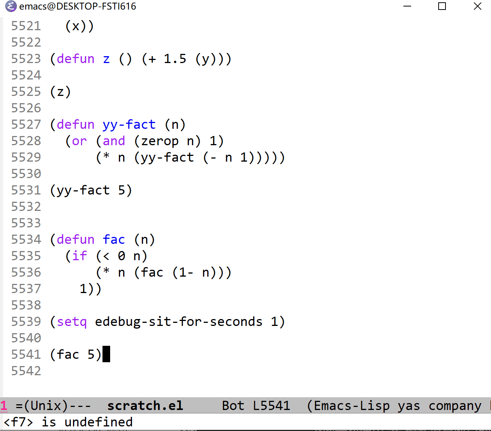
这里我是用的执行指令是 c （continue） 模式，它与单步连续执行的 t 模式很相似，不过它不是在停止点暂停，而是在断点暂停等待固定时间间隔后继续执行。 C （Rapid continue）和 T 模式很相似，速度飞快。而 g （go）和 SPC 对应，表示执行到断点后暂停。 G （Go non-stop）模式表示的就是直接执行，忽略断点。
除了无条件断点外，还可以通过 x 模式加上条件断点，就像这样：
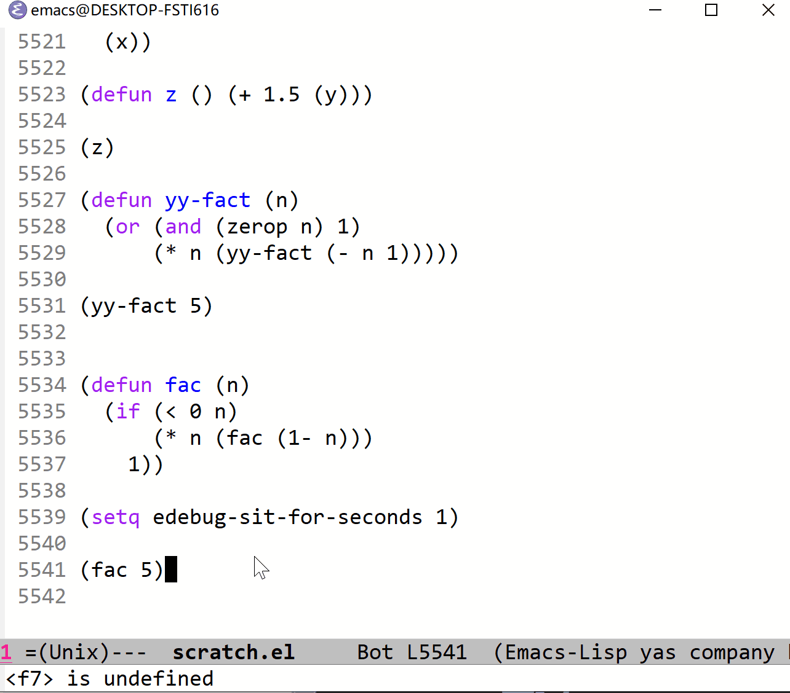
加入条件断点后我按下 c ，在 n 等于 0 时暂停了一秒钟，然后就完成了函数调用，这是符合预期的。如果将 conditon 设置为 t 的话，那么这个断点和普通断点是一样的。在循环次数很大的时候，使用条件变量是很有好处的。
除了普通的条件断点，你还可以设置全局的条件断点（global break condtion），当条件满足时断点就会被触发，这个触发位置不是人为设置的。在每一个停止点 edebug 都会对这个全局条件进行求值，如果得到一个非空值，代码的执行就会根据当前模式暂停。这个全局条件表达式被存放在 edebug-global-break-conditon 中，你可以在 edebug 被激活时使用 X 模式来设置它，或者在任何时候使用 C-x X X 来进行设置。
全局断点条件是对事件进行调试最简单的方法，但是它会使代码的执行速度变慢很多，在不使用的时候最好把它设置为 nil。
通过 b=，=x 设置的断点在程序被重新调校之后就会消失，如果想要保存打断点的位置的话，可以在源代码上写出断点的位置，这可以通过调用 (edebug) 办到，就像这样：
(defun fac (n) (if (= n 0) (edebug)) (if (< 0 n) (* n (fac (1- n))) 1))
如果代码没有被调校的话，对 edebug 的调用就是调用 debug 。
5.3.4 在 edebug 中观察数据
当 edebug 处于暂停状态时，你可以通过对一些表达式求值来说去想要的变量的状态。除了 edebug 显式保留的数据外，对导致副作用的表达式求值会得到想要的后果。
求值可以通过 e 或 M-: 来进行，前者调用的是 (edebug-eval-expression) ，后者则是 (eval-expression) ，它们的求值环境在 edebug 的上下文中。除了这两种方法，使用 C-x C-e 也是可以的，它会调用 (edebug-eval-last-sexp) 。
以下是具体的例子：
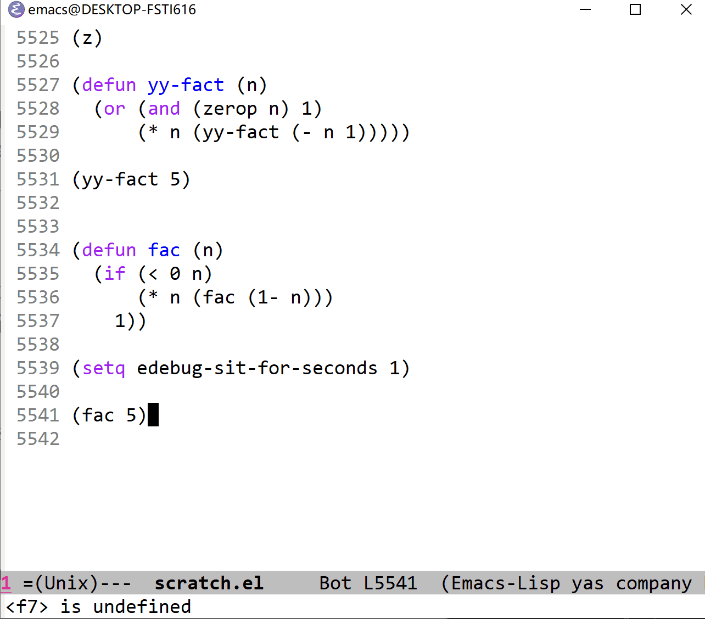
前几次求值我使用了 e 和 M-: ，并通过 setq 将 n 的值改成 10，使得结果发生了变化。
除了使用上面这种简单的求值方法来获取变量或表达式的值外，我们还可以使用求值表 buffer（evaluation list buffer），该 buffer 的名字是 *edebug* ，使用它可以交互式地对表达式进行求值。你还可以在它里面设置表达式让它在 edebug 更新时自动对表达式求值。
在 edebug 调试模式中按下 E 即可进入该 buffer，使用 C-c C-w 可以回到原 buffer。在其中你可以使用 lisp-interaction-mode 中的常用快捷键，比如 C-j ， C-x C-e 之类的。
除此之外，它还可以在 buffer 中保留求值表，一旦代码更新了某个值就可以在 buffer 中体现出来。使用 C-c C-u 可以根据 buffer 中的内容建立求值表，使用 C-c C-d 可以删除求值表中的一些项。
求值表是通过求值表组（group）建立起来的，每个求值表组都由一个或多个 Lisp 表达式组成，组之间通过注释分隔。下面是使用示例：
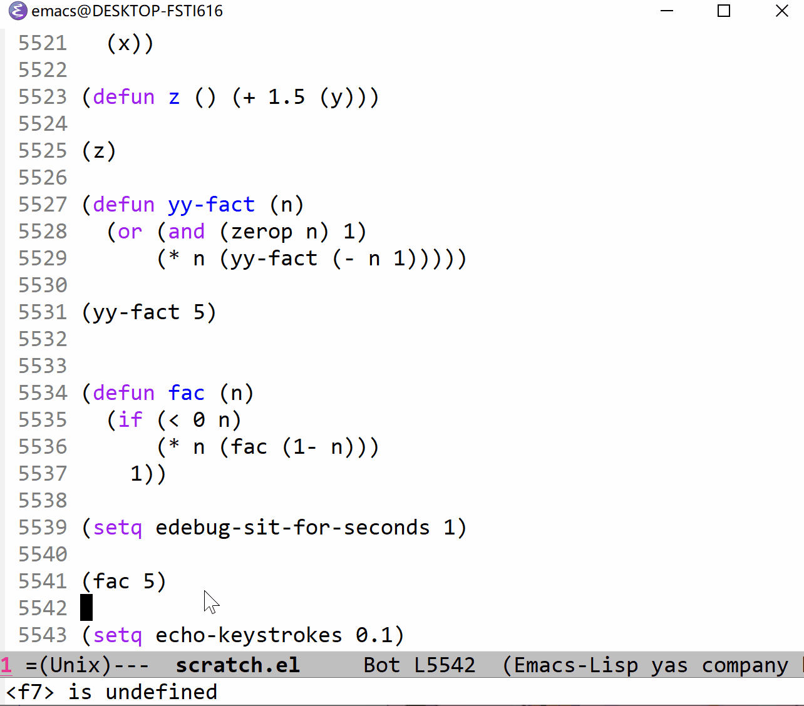
你可能感到有些奇怪，明明在对 (+ n 1) 和 (+ n 2) 加入求值表组时已经加了注释，在使用 C-c C-u 时它们却没能加入到求值表中，只有 n 在求值表中。经过分析我发现，这是 emacs 注释对齐搞的鬼，如果注释只有一个=;= 的话，它会被对齐到中间，通过查看 edebug 的源代码我发现它只能处理顶格的注释行，也就是满足 ^; 正则的注释。
因此，一种解决方法是，在写求值表组时使用多个分号，这样注释就不会被强制对齐，而是正常地在行首，可以被识别。但是这样的组经过 C-c C-u 后还是会变成单分号形式的注释，下一次调用 C-c C-u 后它又不能正确识别了。
另一种解决方式就是修改 emacs 源代码，将正则改成能够识别注释前空格的形式，就像这样：
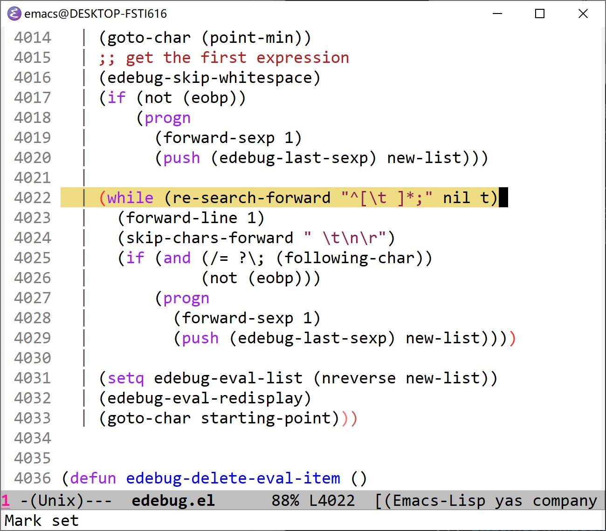
这个函数的名字是 edebug-update-eval-list 。这里我将上面的正则替从 ^; 换成了 ^[\t ]*; 。来看一下效果：
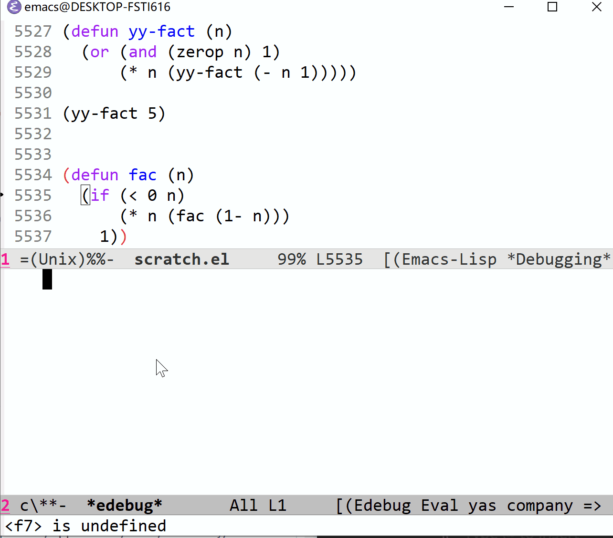
目前（2021/7/4）我不是很清楚这是不是 bug。（如果是的话，那我岂不是在写关于调试的文章时还顺带发现了一个 bug？）
5.3.5 其他的一些杂项
除了上面提到的几种前进方式（ t ， SPC ， c 等等），还有一些，这里列在下面：
h模式，使用它可以执行到最近的停止点f模式，执行一整个 s 表达式o模式，执行程序直到最后一个 s 表达式之前i模式，进入停止点之后的被调函数
? 命令可以显式所有的帮助消息。 q 可以退出 edebug 并回到 top-level。 r 可以显式最近执行的表达式的值。 d 显示 backtrace。
w 命令可以让光标回到当前的停止点。
5.3.6 文档中我没有介绍的
- 我没有介绍 Views 这一小节，因为目前我对 windows configuation 一无所知
- 我没有介绍 Coverage Testing，原文档并不长
- 我没有介绍 Edebug and Macros，因为我很少写宏
- 我没有详细介绍 edebug 中的选项，因为文档中比较完整和详细
基本上调试器的基本功能我都讲到了，其余的可以自行查看文档。
6 后记
呼呼呼，总算是写完了。这篇文章差不多用了我一周时间。
我想写一篇关于调试的文章的起因大概是在上个学期的一次课设。上个学期我做了一个数字电子电路的小课设，选题是做一个带闹钟功能的数字时钟，可校准时间，可设置闹钟时间。这个课设我和队友用了三天的时间来完成，大概是用了十几片 74 系列芯片和上百根导线。成果如下：
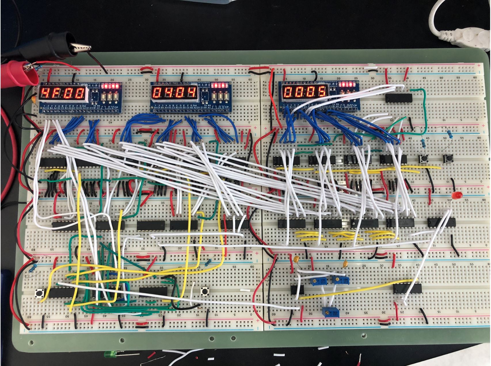
在搭电路的过程中，各种各样的错误都出现了，比如导线和触点接触不好，芯片放反，导线接线过于杂乱而接错，三五定时器接错无法起振，开关抖动，等等…… 面对如此多的问题，我唯一能够凭借的只有手里的万用表和一对眼睛。通过这次大作业我发现了模块化的重要性，首先通过测试确保一个模块是正确的，之后就只需要关注模块与模块之间的连接关系了。这应该也属于单元测试的一种。
促使我写下这篇文章的直接原因是一个让我深感挫败的 bug。本学期我在帮助朋友写科学计算题时，由于没有考虑到数据流的非单调递减性，在前后数据相除并以结果来求 sqrt(1 - ans^2) 时由于 ans 大于一使得 sqrt 返回 nan。这个错误我花了一天时间才找出来，这是我没有使用日志文件的缘故。如果使用日志的话，应该很容易在文件中看到 nan。
借助学习 emacs debugger 的机会，正好把这些问题都理一遍，也算是亡羊补牢了。文章中的某些方法（比如打 log）我现在还没有掌握，只能在之后的实践中继续学习了。
这里推荐一本叫做 Debug Hacks 的书，据说书里面总结了一些调试故事和调试方法。（虽然我还没看过（笑））。
能看到这里的同学们辛苦了，之后的近几篇文章我会学习一些关于测试的知识，然后结合 emacs 介绍一下。
用了 cnfonts 之后，终于可以用 emacs 的 markdown-mode 来写写 markdown 了，Windows 上 emacs 默认的中文字体简直不能直视。相比于使用 marktext ，emacs 我用起来更舒服一点。当然 marktext 也是相当优秀的 markdown 编辑器，现在我可以一个用疲了用另一个。
（如果题图总是 cirno 的话那我岂不是发不完所有东方角色的图了，干脆之后每篇文章的结尾都放一张不同的？）
7 参考资料
【1】 https://en.wikipedia.org/wiki/Debugging
【2】 https://en.wikipedia.org/wiki/Grace_Hopper
【3】 https://en.wikipedia.org/wiki/Ada_Lovelace
【4】 https://paris-swc.github.io/python-testing-debugging-profiling/
【5】 https://en.wikipedia.org/wiki/Software_bug
【6】 https://en.wikipedia.org/wiki/Year_2000_problem
【7】 http://www-users.math.umn.edu/~arnold//disasters/patriot.html
【8】 https://www.bugsnag.com/blog/bug-day-ariane-5-disaster
【9】 https://www.scnsoft.com/software-testing/types-of-bugs
【10】 https://www.softwaretestinghelp.com/why-does-software-have-bugs/
【11】 https://economictimes.indiatimes.com/definition/debugging
【12】 https://www.cs.colostate.edu/~cs165/.Fall17/recitations/W11L2/doc/debugging.html
【13】 https://www.elprocus.com/what-is-debugging-types-techniques-in-embedded-systems/
【14】 https://sites.google.com/site/assignmentssolved/mca/semester5/mc0084/6
【15】 https://baike.baidu.com/item/%E6%9C%9B%E9%97%BB%E9%97%AE%E5%88%87
【16】 http://www.lamost.org/~yzhao/history/chinesemedicine.html
【17】 https://www.cnblogs.com/luguo3000/p/3543487.html
【18】 https://www.zhihu.com/question/20626825/answer/106888829
【19】 https://www.zhihu.com/question/364727399
【20】 https://www.scalyr.com/blog/the-10-commandments-of-logging/
【21】 https://en.wikipedia.org/wiki/Debugger
【22】 https://docs.microsoft.com/zh-cn/visualstudio/debugger/what-is-debugging?view=vs-2019